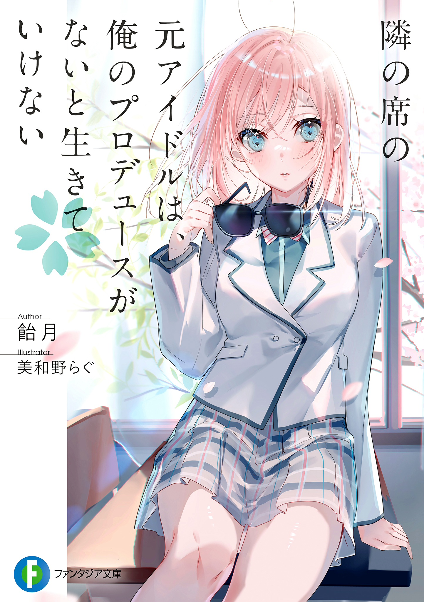

Tonari no Seki no Moto Idol wa, Ore no Produce ga nai to Ikite Ikenai
Novel Info's
Status: Ongoing
Genre: Comedy, Drama, Romance
Author: Ametsuki
Illustrator: Rag Miwano
Volumes: 2
Original Publisher: Fujimi Fantasia Bunko
English Publisher: N/A
Fan Translation: Ret-Tls
Description/Sypnosis
She is no longer getting banned on romance relationship. But she still didn’t know anything.
The former idol, Miru Kasumi, who recently transferred to this school, is not normal.
“Nice to meet you. I’ll monopolize your views! I’m Miruffy!”
“Thanks for everything! May I sign your uniform?”
She has extraordinary style and beautiful eyes like jewels. What’s more, her unique extraordinary demeanor was so far from ordinary everyday life, and it all looked abnormal. ────I thought.
“Hmm, I think this might be the first time I’ve seen someone who isn’t blushing after getting fan service.”
“Hey, will you make me a ‘normal’ girl?”
And then the production began. Looking for entertainment on weekends and cultural festivals. When I teach Kasumi about normal high school life, my “normal” everyday life also changes… This is a story about the beginning of me and Kasumi’s changing youth.
Download Links
Epub & Pdf